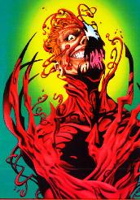
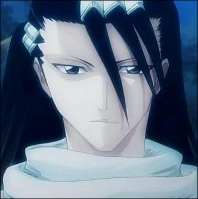

Forums galactiques > Assemblée Galactique : diplomatie officielle > Topic des présentations
Pages : 1 2 ... 8 9 10 ... 12 13
| Seb@ Respect diplomatique : 12  12/01 ETU 20:10 | Score : 1 Détails "Longue vie au grand schtroumpf" s'exclama le commandant Seb@, garant de la liberté du peuple originaire de la planète GaG.
"Nous sommes un peuple pacifique et fier de l'être, notre planète est naturellemnt jonché de plante verte aux effets euphoriques, nous nous proposons donc de faire partager au schtroumpf ou à tout autre commandant, nos marchandises. Merci de votre attention" "Ni Dieu Ni Maître" cria Seb@ à l'assemblée, ravie de cette bonne nouvelle. | ||
| Major Respect diplomatique : 6  13/01 ETU 11:04 | Score : 6 Détails Venu des ténèbres, une ombre s'avança:
Chers commandants, je me présente mon nom est Major, je suis un ancien commandant de l'armée sur Terre. Comment ai je pu survivre tant d'années ? C'est simple, je possède une substance ou plutôt un autre moi, oui c'est ça un autre moi. | ||
| ACTARUS Respect diplomatique : 54  14/01 ETU 17:43 | Score : 3 Détails Salut à tous les "valeureux" Commandants de cette Galaxie !
Je suis un jeune Prince-Commandant, comme mon "respect diplomatique" l'en atteste, qui s'est perdu après être tombé dans une profonde léthargie lors d'un vol spatial ! Toute ma colonie a subi le même sort, et nous nous sommes donc implantés sur Euphore. Cela ne fut pas simple ... D'un naturel héroïque et valeureux, je tendrais vers la loyauté ... Je n'ai pas de tendance guerrière particulière, car, dans des très vieux écrits, un certain Sun Tzu aurait dit "la plus belle victoire est celle que l'on obtient sans combattre", dans un livre appelé ... l'Art de la Guerre. ... et il aurait même ajouté "plus grande est la connaissance de ton ennemi, plus grandes sont tes chances de victoire" ... ACTARUS, Prince d'Euphore. | ||
| Dark Respect diplomatique : 16  14/01 ETU 19:13 | Score : 10 Détails Alors que le commandant ACTARUS en avait fini avec sa presentation, un jeune commandant encore inconnu se leva tranquillement, assez à l'aise pour sa premiere participation au sein de l'Assemblée :
"Si la coutume est de se presenter, je ne voudrais pas faire abstraction de celle-ci : Certains commandants me connaissent déjà, et ont déjà eu affaire à moi, me connaissant pas forcement bien! Je suis issu d'une longue et sage famille, qui malheureusement a péri lors de la dernière apocalypse... Je suis donc le dernier survivant de la sombre et mystérieuse peuplade que l'on nomme 'Darkiste'. Il paraît que l'un de mes frères est perdu dans cette galaxie, mais je ne pourrais le trouver... De plus, je connais un lointain cousin a moi, mais il ne me semble pas qu'il soit déjà passé dans cette galaxie, il est très vieu, et ne doit donc plus avoir la force nécessaire! Comme vous pouvez le voir, je suis né sour le signe de la panthère, qui devrait donc faire de moi un vaillant combattant féréraliste! Mais j'ai voulu faire honneur à mon défunt père, qui était le plus sûr et le plus apte homme commercial de tous les Darkistes qui existaient... Ainsi, j'ai monté mon propre commerce, que je nomme le "marchand sombre". A ce propos, si quelqu'un a besoin de quoi que ce soit, je peux traiter avec lui !" Réfléchissant un peu sur ce qu'il pourrait dire, le commandant Dark préféra en resta là et rajouta juste : "Je ne vais pas dévoiler toute ma vie, puisque je vois que certains commandants s'endorment, et pourtant j'aurai des choses à dire... Sur ce, je vous salue, commandants et commandantes, et je vous dit à bientôt!" Le commandant Dark regarda autour de lui, pour apercevoir quelques commandants tel que Bob Brache ou encore aurélien, dont il avais déjà fait connaissance. Puis le jeune commandant s'en alla de ces lieux et peut etre revenir plus tard! | ||
| Salyin Respect diplomatique : 53  14/01 ETU 19:30 | Score : 1 Détails Il me semble que vous n'êtes pas si jeune que ca , commandant Dark. Cela fait des lustres que vous êtes ici. votre système natal est aussi le mien, je crois. Une passation de pouvoir envers un commandant plus jeune ?
| ||
| Baltus Respect diplomatique : 20  14/01 ETU 20:48  | Score : 8 Détails ** Un individu en armure blanche avec un drole de casque d'ou emerge plusieurs antennes arrive dans la salle.**
Bonjour à vous Messires et Mesdames commandants de cette nouvelle galaxie, Je suis un nouveau venu, Baltus,... ** l'individu s'interromps et pose la main sur son casque.** Escusez moi, c'est le rapport d'espionnage du soir qui arrive. ** après un instant de silence, il se remets à parler** Bon donc je disai, je suis rynn, membre de l'alliance, et spécialisé en espionnage divers et variés. J'espere avoir rapidement à collaborer avec vous d'en le cadre de mes... ** Une nouvelle pause suis durant laquelle on suppose qu'il recoit un nouveau rapport mystérieux** oui le rapport d'après celui du soir, encore navré. Donc, oui, j'espere avoir rapidement à travailler avec certain d'entre vous en bonne amitié car je deteste la violence, qui est a proprement parler inutile et scandaleuse. au plaisir de vous revoir tous. | ||
| joffrey Respect diplomatique : 1  14/01 ETU 21:00 | Score : -1 Détails bienvenus à tous !!!
| ||
| caméléon Respect diplomatique : -15 14/01 ETU 21:02 | Score : 3 Détails une femme vêtue d'une cape sombre se leva et s'avança au milieu de l'assemblée.
" Salutations à vous ! Je me nomme Cameleon J'étais autrefois commandante dans les forces spéciales de Kiresk, après la prise du pouvoir par l'armée dont je commandait les actions principales, je fûs écarté, j'aurais dût avoir un terrible accident et me voici Je suis ici pour le fun." Elle se rassit sans que personne n'eut pu voir son visage caché par une large capuche. | ||
| Dark Respect diplomatique : 16 14/01 ETU 21:09 | Score : 3 Détails "Bienvenu a tous le monde, lanca le cdt Dark en entra a nouveau dans l'assemblée,
Pour répondre a Salyin, je ne suis en effet pas jeune dans cette galaxie, mais jeune en âge! En effet, mes parents m'ont eu alors qu'ils n'avaient pas 20 ans, et tres jeune, j'ai suivi une formation comme tous les darkistes de mon âge! Ainsi, j'ai dû prendre le contrôle suite a la regretable mort de mon père ... donc je parlais de mon âge et non de ma durée de vie dans cette galaxie !" | ||
| Blutch Respect diplomatique : 197  15/01 ETU 03:11 | Score : 5 Détails Au moment de se rassoir, n?ayant encore reçu aucunes nouvelles du Caporal Blutch le jeune commandant Dark le chercha des yeux dans l?assemblée. Repérant ce manège, le sergent Chesterfield se leva pour l?excuser. N?osant avouer la désertion de son caporal il s?emmêla dans d?inextricables explications d?une disparition lors d?une mission de reconnaissance. Explication peu convaincante d?ailleurs qui conduisit le sergent aux arrêts.
Entendant parler de lui, trois sièges derrière Caporal Blutch ne jugea pas opportun de se lever mais continua de distribuer les cartes, mort de rire avec ses compagnons de jeux. C?est ainsi que, officiellement mort au champ d?honneur, personne n?eu de nouvelles du jeune caporal Blutch. | ||
| Yojimbo Respect diplomatique : 13  15/01 ETU 18:26 | Score : 6 Détails ~~~ Sortant de l'ombre, le commandant Yojimbo s'avance, l'air solennel, le visage dénué de toute expression :
"A mon tour je prend la parole... Je me présente, je me prénomme Yojimbo. Je suis de la race déclinante des Eldars ; mais il y bien longtemps que j'ai ravalée ma fierté si chére à mon peuple... J'ai quitté les miens afin de pouvoir permettre à ma race de renaître sous de meilleurs auspices, sous un meilleur Soleil. Mais la guerre est partout... Et contre mon gré je reprend les armes pour défendre notre nouvel eden. Voilà l'homme que je suis. Voilà la triste vie que je mène. Tel est mon destin... Je vous salue bien bas frères d'armes et dignes représents." Comme il est arrivé, Yojimbo repart. Cela fesait bien longtemps qu'il ne s'était exprimé... ~~~ | ||
| khornes Respect diplomatique : 287  15/01 ETU 18:29 | Score : -6 Détails Des Elrads?
Ils n'ont toujours pas été exterminés? Ils ont survécus face à leur guerre contre leurs congénères Eldars noirs? Commandat,auriez vous des nouvelles sur les guerres près du Warp? | ||
| Yojimbo Respect diplomatique : 13 15/01 ETU 21:41 | Score : 4 Détails ~~~ "Je fais parti d'un petit groupe d'Eldars qui pensent que le salut de notre race, telle qu'elle a toujours existé, est vain. Selon nous, ils devient primordial d'abandonner les vaisseaux-mondes en tant que lieu d'habitation pour notre peuple. Notre petit groupe d'exilés a donc fuit les conflits fratricides dans le but de renaître de ses cendres.
La race Eldars telle qu'elle était jusqu'alors est belle est bien morte dans la complaisance de sa superiorité... J'espère avoir répondu à vos question très cher Khornes. Que Kaine vous huide toujours vers la lumière." Heureux de son entretient avec le Commandant Khornes, Yojimbo disparut de nouveau dans la pénombre... ~~~ | ||
| Ash Morpheus Respect diplomatique : 126  16/01 ETU 14:54 | Score : -4 Détails Si vous avez besoin de cendres... je serai toujours la pour ^^
Euh commandant, voulez vous de l'aide de ma part? si oui, n'hesitez pas a m'appeller sur le telephone galactique (MP) et dites moi en quoi je serais serviable Ash Morpheus | ||
| Magnus Prima Respect diplomatique : -66  17/01 ETU 22:54 | Score : 2 Détails Un homme tous de blanc vetus entra dans la salle,evoluant vers son centre il marquat une pose avant de commencer ...
-hum... Et bien pour commencait,j'informe ceux qui n'ont pas le plaisir de me connaitreque je me nome Magnus Prima, Comandant et president de la nOuvelle republique de la planete ,Hurg, Magnusis Prima .Pourquoi avoir choisi se nom? et bien c'est tres simple ,j'ai decider de faire Honneur a ... MOI ,puisque personne s'occupe de flater mon prescieux et volumineus Ego je m'en charge .... (Apres une petite pose il reprit) Je me sens un peu seule sur ma Planete et ma republique ,J'invite donc tous autre gouvernement a prendre contact avec MOI Aurevoir | ||
| bouh211 Respect diplomatique : 105  18/01 ETU 13:34 | Score : 11 Détails **Appuyé contre une colonne, écoutant les conversations au même endroit depuis plusieurs jours, le commandant Bouh211 se décide à se présenter**
Mes salutations à tous. Je suis le commandant Bouh211, issu de la planète Glop. Je tiens à préciser avant tout que je ne suis pas un belligérant, mais un commerçant, issu de l'EGC (école galactique du commerce). J'ai également fait mes preuves dans le droit, ayant rédigé avec deux amis la constitution qui régit mon système planétaire. **Il regarde longuement l'assistance, puis reprend.** Je vois bien ce que vous pensez : "C'est un requin prétentieux prêt à tout pour réussir !" Pas exactement. Je suis commerçant par nature, donc certes, la réussite est mon objectif. Mais en tant que juriste, je me dois d'avoir un code d'éthique. De lointains ancètres de mon peuple disaient "Qui vis pacem para bellum". Qui veut la paix prépare la guerre. C'est tout à fait juste. Mais sachez, vous tous ici présents, que préparer la guerre ne veut pas dire faire la guerre ! Mon objectif dans cette galaxie est avant tout de faire vivre mon peuple du mieux possible, et pour cela, je le défendrai. Mais prennez bien note que mes intentions sont pacifiques, et que dès l'ouverture à l'extérieur de mon système par l'hyperfusion, mes navires de commerce seront là pour chacun d'entre vous. Le commerçant que je suis sera disponible, mais n'oubliez pas que le militaire sera toujours présent. Je vous remercie de votre attention. **Il s'éloigne, se retourne un moment, prêt à ajouter quelque chose, puis se ravise et retourne s'appuyer sur sa colonne pour suivre les débats** | ||
| khornes Respect diplomatique : 287 18/01 ETU 17:01 | Score : -3 Détails Bienvenu commandants!!
Participez activement,nous en avons besoin.. J'espère vous revoir au cours d'une discussion prochaine!! | ||
| poseidon Respect diplomatique : 15  19/01 ETU 14:33 | Score : 4 Détails Poseidon s'approcha du pupitre et se racla la gorge faisant comprendre par la même occasion à l'assemblé qu'il désirait prendre la parole.
" Bonjour à vous tous membre de la grande aasemblée galactique. Je viens pour me présenter devant vous car une nation se dresse sur la planète Actos, une nation en qui je met tout mon espoir, en qui j'ai totale confiance. Elle est forte et ambitieuse mais trés jeune et donc vulnérable. J'entend dire à droite et à gauche que la guerre fait rage aux quatres coins de la galaxie et cela ne me rassure pas. " Il bu dans son gobelet et poursuivit en agitant les bras, " Ma nation ne doit pas souffrir de cette guerre qu'elle n'a pas demandé et à laquelle elle ne veut pas participer. La guerre n'a jamais rien donné à l'homme si ce n'est accentuer le vice qui le ronge de jour en jour. Je vous remercie de votre attention. " | ||
| Gthueber2 Respect diplomatique : 1  19/01 ETU 15:03 | Score : 1 Détails Bonjour à tous !
C'est avec humilité et respect que je me présente à vous, moi le dernier arrivé et donc le plus petit d'entre tous ! J'espère appartenir un jour aussi à la cour des grands de ce monde, et en attendant ce moment lointain je vous salue tous bien bas. Le commandant Gthueber(2). | ||
| Lena Respect diplomatique : 5 19/01 ETU 15:15 | Score : 5 Détails Bonjour à tous!
Je suis comme la plupart d'entre vous une nouvelle arrivante et je viens ici pour me présenter.Je m'appelle Lena et suis pacifique dans l'âme.J'espères pouvoir établir des relations tout à fait amicales avec vous! |
Pages : 1 2 ... 8 9 10 ... 12 13
Forums galactiques > Assemblée Galactique : diplomatie officielle > Topic des présentations